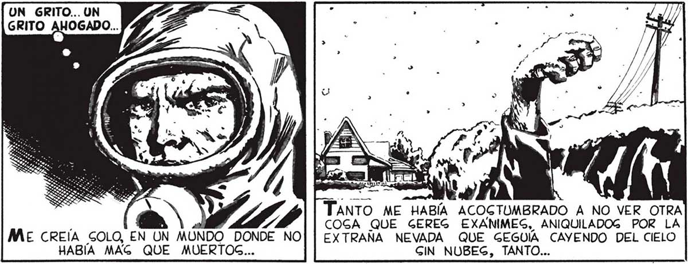
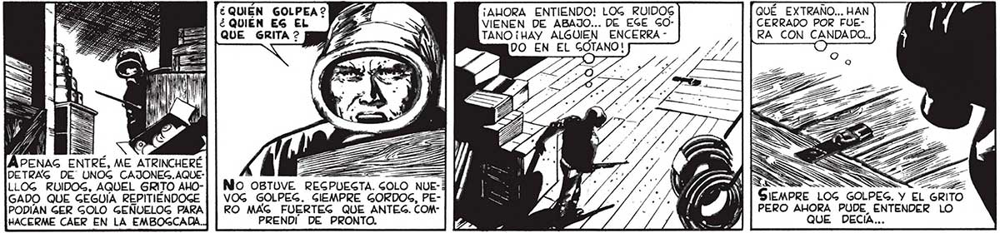

48 EsTE HECHO ME PARALIZO. MIS MUSCULOS SE TENSARON, PERO ME ESFORCE EN REACCIONAR ... o _—_— hd TANTO ME HABÍA ACOGTUMBRADO A NO VER OTRA / 7D COGA QUE GEREG EXANIMEG, ANIQUILADOG POR LA ME CREÍA GOLO, EN UN MUNDO DONDE NO| | EXTRAÑA NEVADA QUE GEGUÍA CAYENDO DEL CIELO HABÍA MAG QUE MUERTOS... GIN NUBEG, TANTO... ...ELLO. PERO EGO NO ERA MUCHO MAG TRANQUILIZADOR QUE Gl GE TRATA RA DE UN FANTAG MA: TODO GOBREVIVIENTE, YA LO HAÍ BÍA DICHO FAVALLI, 4 ERA UN ENEMIGO EN POTENCIA. LA ÚNICA LEY QUE HABÍA QUEDADO EN PIE LUEGO DEL DEGAGTRE ERA LA LEY DE .. HABÍA GIDO EL GILENCIO ¿e | == | LA JUNGLA LA CALLE, EN LA FERRETERIA, QUE LOG a : 1 MATAR O MORIR GÚBITOGS GOLPEG Y EL GRITO ME HABIAN > NE . EGTREMECIDO DE ATERRADA GORPREGA. ¿QUIEN GOLPEA ? 2292 ¡AHORA ENTIENDO! LOG RUIDOG QUÉ EXTRAÑO... HAN ¿QUIEN EG EL Py — VIENEN DE ABAJO... DE EGE GO- CERRADO POR FUEQUE GRITA ? [5 FS TANO ¡HAY ALGUIEN ENCERRA - RA CON CANDADO.. - DO EN EL GOTANO! » APENAG ENTRÉ, ME ATRINCHERÉ 5] ES <= DETRAG DE UNOG CAJONEG.AQUE- | EZ SL NA ISS == E LLOG RUIDOG, AQUEL GRITO AHO-| | NO OBTUVE REGPUEGTA. GOLO NUE-5 A //./.-/ Ne SN SS GADO QUE GEGUÍA REPITIÉNDOGE | | VOG GOLPEG. GCIEMPRE GORDOS, PE- El 4 PARO DAS MPRE LOG GOLPES. Y E PODIAN GER GOLO GEÑUELOG PARA] | RO MAG FUERTEG QUE ANTEG. COM- 3 y , O AHORA PUDE ENTEND HACERME CAER EN LA EMBOGCADA. PRENDI DE PRONTO. Ñ A P QUE DECIA... A

